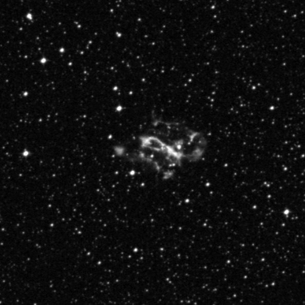
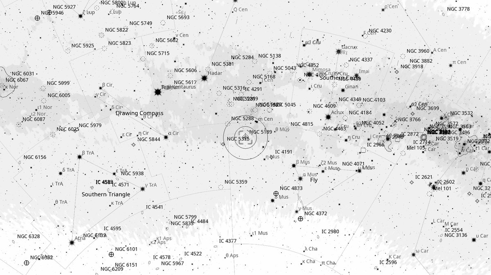
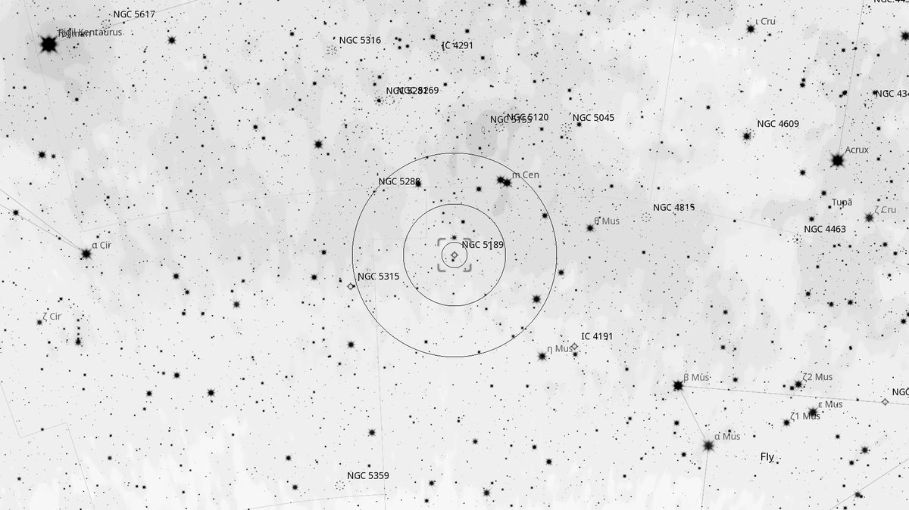
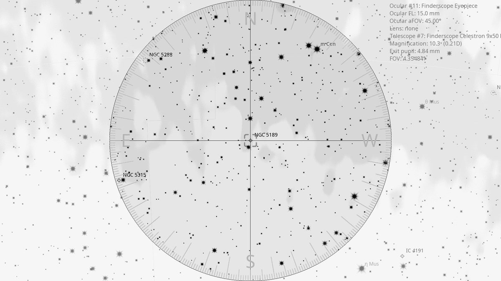
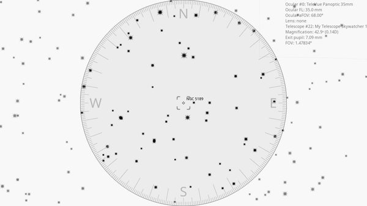

NGC 5189 (PN)
| R.A. | Dec. | Size | Mag | SB | Cnt.St | Type | Distance | Chart |
|---|---|---|---|---|---|---|---|---|
| 13h 33m 35.9s | -65° 58′ 33.9″ | 2.3′ | -- | 11.9 | -- | PN | -- | -- |

Background
NGC 5189 is the “Spiral Planetary” — a remarkably complex planetary nebula 1,800 light-years away in Musca. Hubble imagery shows intricate filamentary structure giving the appearance of a barred spiral galaxy. Likely shaped by a binary central system that has ejected mass at multiple angles.
My Observing Notes
25-cm (Meade 10-inch LX200, The Coffee Grinder): Telrad's outer ring on the top edge of the Coalsack; using Sky Atlas 2000.0 (Map 25), found a 5–6 mag pair and an equilateral triangle of stars to plate-solve into the planetary. At 2.3' and mag 10.3 it jumps out immediately as an irregular shape with a bright core and surrounding nebulous halo. Switching to the 15 mm Panoptic + OIII filter dramatically improved contrast — internal structure became visible, with a bright extended central bar tapering into the halo giving the characteristic look of a barred spiral. A real pleasure even at this aperture.(Saturday, August 2025)
References
Charts



